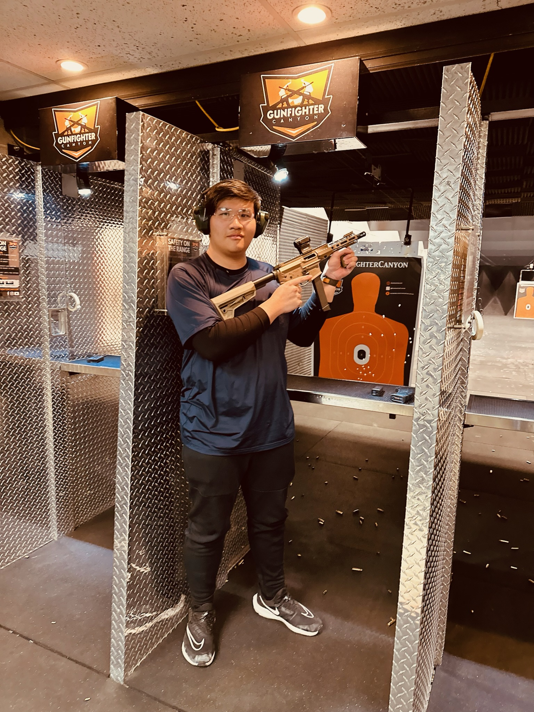

|
| Trey Ignatius Leong / About Me |
|---|
|
Heya! My name is Trey Leong, and I am a programmer!
Currently, I am taking Computing in Junior College, and intend to take Computer Science in the near future at the university level. I am currently learning Python, HTML, CSS as well as Swift. Furthermore, I have also interned at many leading tech companies such as Razer. I made this website as part of one of my mini projects to showcase my portfolio on a website using HTML/CSS. Additionally, I also am a tech enthusiast, and I am often curious about new products and ideas in the tech industry. In the near future, I hope to be able to become a back-end or even full-stack developer and be able to work for either myself or a leading tech company! Thank you for reading! Have a great day! :) |
 |